Viewing, done
correctly & the Z-buffer
How we stop projection from destroying depth, build a standardised view volume, decide which surface wins each pixel, and finally make the world look like it has perspective.
Projection ate our depth
In the previous topic we projected the scene into the image plane and discovered two painful problems. We cannot blend realistically without knowing which objects are in front, and the projection we used collapsed every Z coordinate onto the plane z = 0.
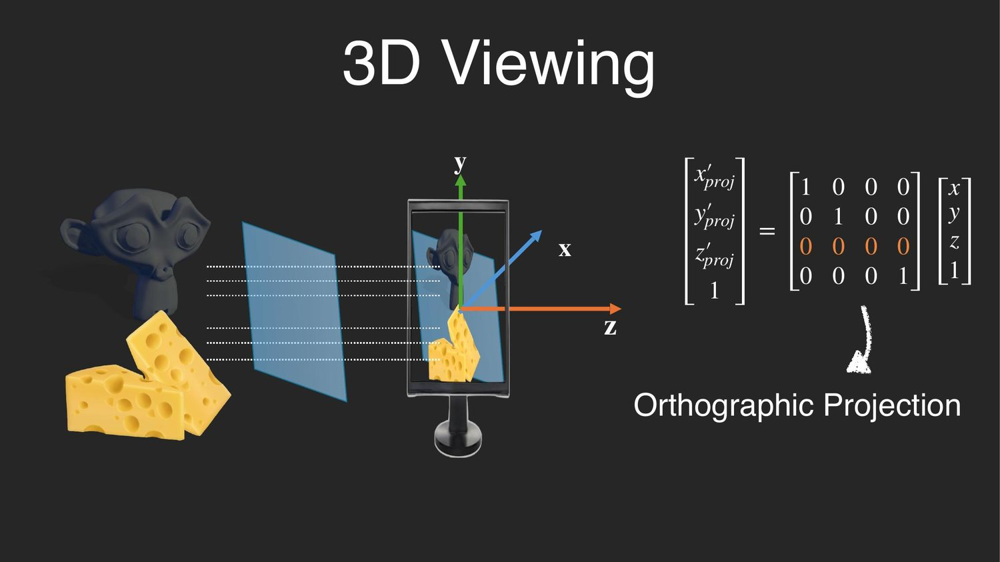
Two consequences make this useless for 3D graphics:
- All depth information is lost. Once Z is flattened we can never recover which surface was nearer.
- The matrix has no inverse. A projection that collapses a dimension is not reversible — we can't transform back to original coordinates, which a graphics system needs.
- Nothing is bounded. Even objects behind the camera get collapsed and projected, so we render a cluster of everything.
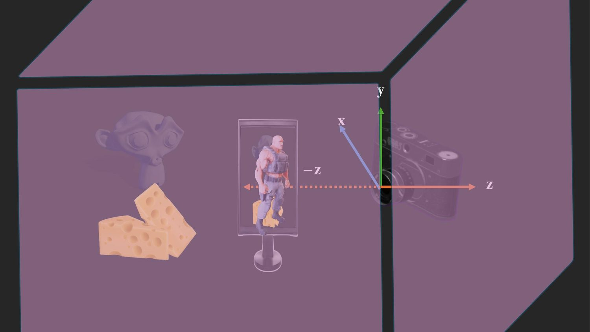
Define a bounded, standardised viewing volume → build a projection matrix that preserves Z and is invertible → use that Z in the Z-buffer to resolve hidden surfaces → upgrade to perspective so the world looks real.
The viewing volume
Remember the camera analogy: the camera looks at a volume of visible space. The camera transform (the DC⁻¹ step) moved that whole volume along with the scene. Whatever lands inside the volume is what gets projected.
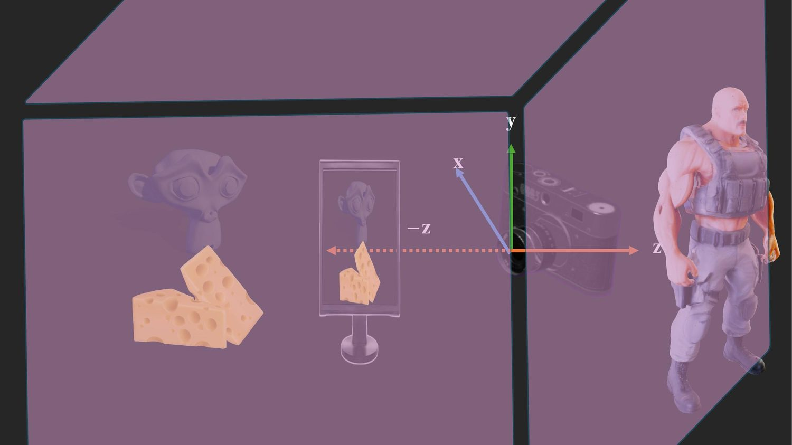
To stop projecting the entire universe, we give the volume bounds: left, right, top, bottom, and a far (F) plane.
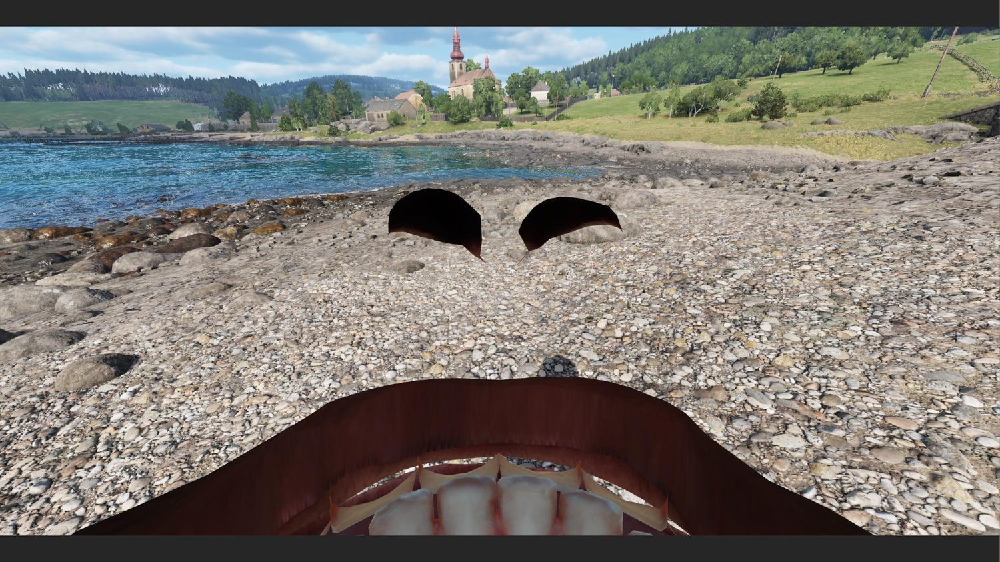
→Why we still need a near plane
We project onto z = 0, so surely a near plane is redundant? Not quite — we still see things in front of us. If the camera sits at the centre of a character's head, geometry that pokes through the camera produces nasty rendering artifacts.
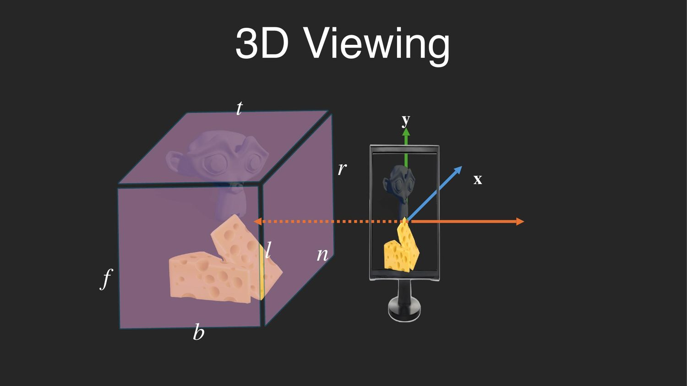
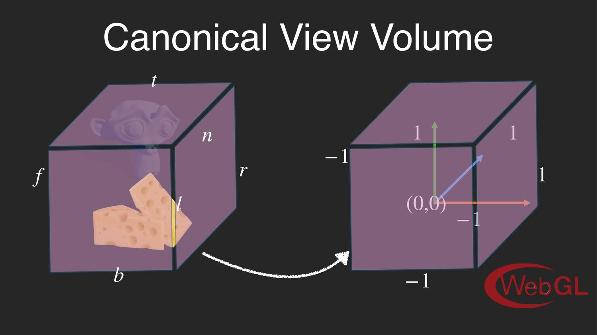
The near plane stops geometry inside/behind the camera projecting incorrectly. The far plane bounds the depth range so the Z-buffer's limited precision isn't wasted on space we never see.
The canonical view volume
Displays have endless configurations — resolutions, cables, fields of view. It's impractical to feed all those parameters into the pipeline every frame. Instead we map everything into a single standardised cube: the canonical view volume.
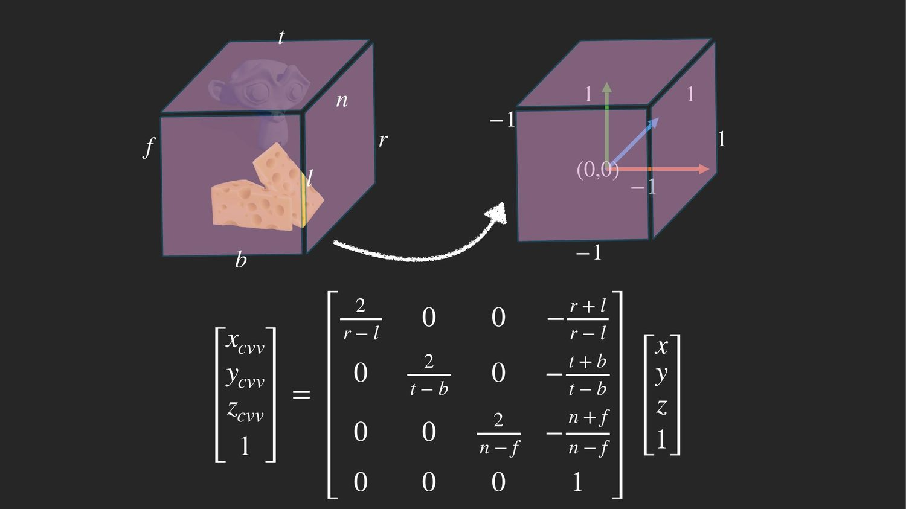
- The arbitrary view volume → the canonical cube → finally the screen.
- The starting volume need not be a cuboid; faces can be rectangular (or, soon, a frustum).
- Once in canonical coordinates the values are immediately ready for projection and clipping, with no per-display parameters needed.
The orthographic projection matrix
We replace the useless flattening matrix with one that maps the bounded volume into the canonical cube. It looks daunting, but it's only two ideas — a translation (4th column) and a scale (diagonal).
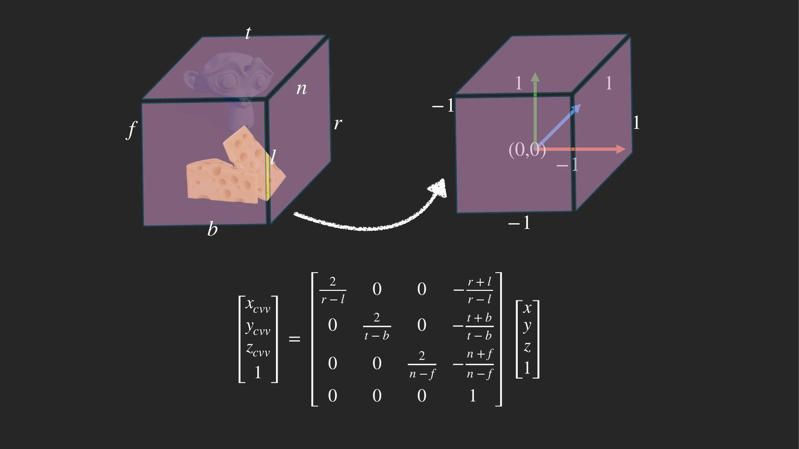
①Scale
The width of the cube is 2 (−1 → 1). The volume's width is right − left. So x is scaled by:
…and identically for y (top − bottom) and z (far − near).
②Translation
The 4th column shifts the volume's centre to the origin so the scaled values sit symmetrically inside −1…1.
✓Sanity check: does x = left map to −1?
Plug the left-most x value into the row and simplify — out pops −1, exactly the left bound of the canonical cube. Do the same with x = right and you get +1. That's the whole philosophy.
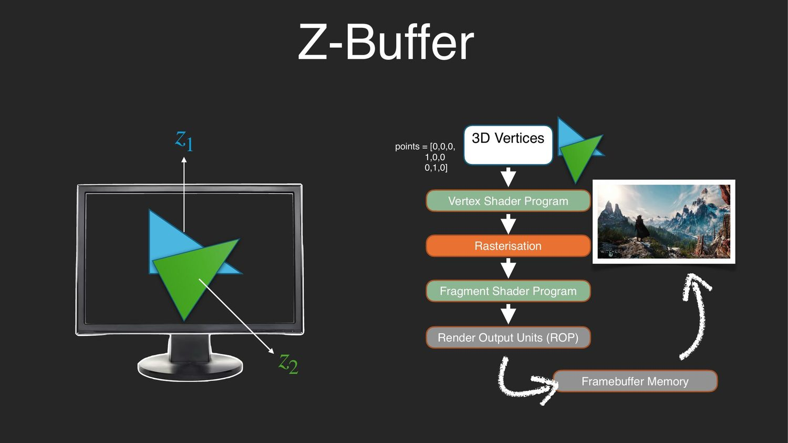
Drop this matrix into the vertex shader in place of the old projection. It's standardised (no display params), ready for projection, and — crucially — the Z axis is preserved. We finally know our depth values at the end of the pipeline.
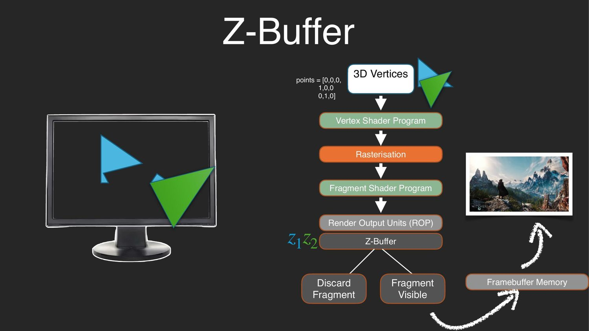
The Z-buffer
The Z-buffer is the most popular rasterisation algorithm in existence — efficient, simple, and almost always in hardware. Its job: solve the hidden-surface problem — make sure nearer surfaces hide farther ones.
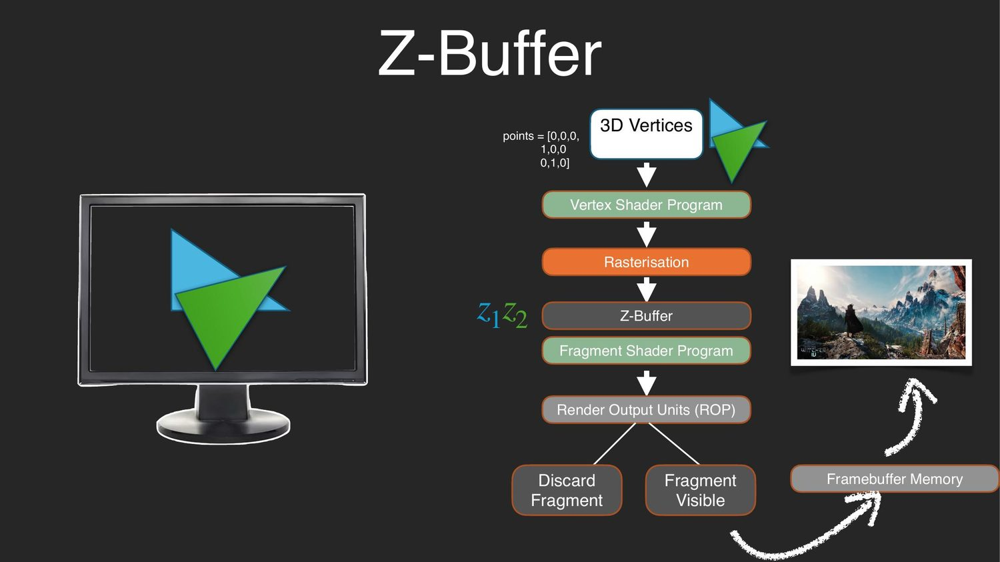
→Where it sits in the pipeline
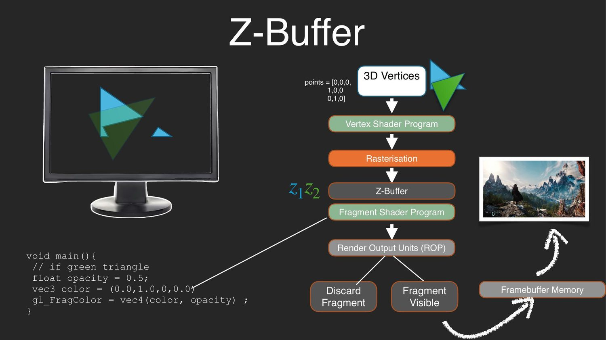
→The algorithm
After screen-space culling, for every fragment of every triangle: compare its Z against the value already stored. The buffer starts at maximum depth, so the first real fragment always wins; later fragments only win if they're nearer.
# Pixel in fragment shader initialise z_buffer[all] = MAX_DEPTH initialise framebuffer[all] = background for each rasterised fragment (x, y, z, colour): if z < z_buffer[x, y]: # nearer than what's stored z_buffer[x, y] = z # keep this depth framebuffer[x, y] = colour # keep this colour else: discard fragment # something is already in front
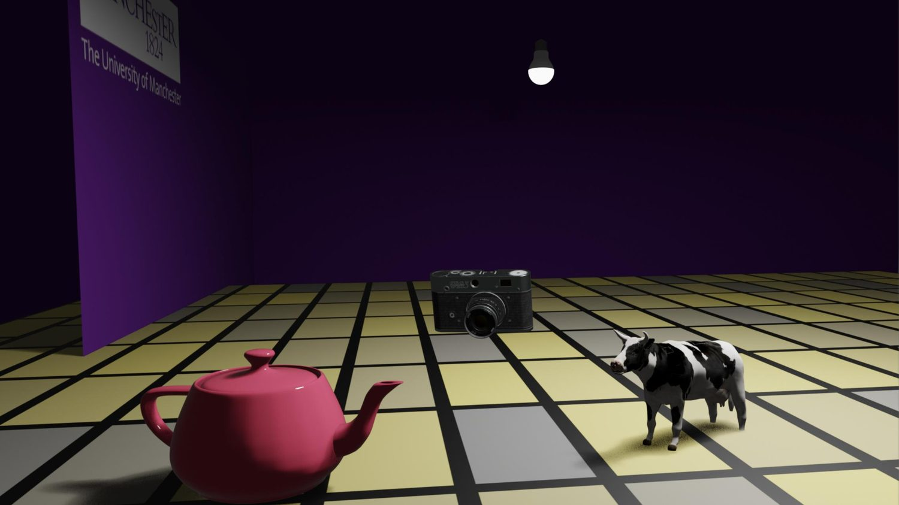
Why test depth after the fragment shader?
It seems wasteful — we run the (expensive) fragment shader, then maybe throw the fragment away. Why not test depth first and skip dead fragments? Because of transparency.
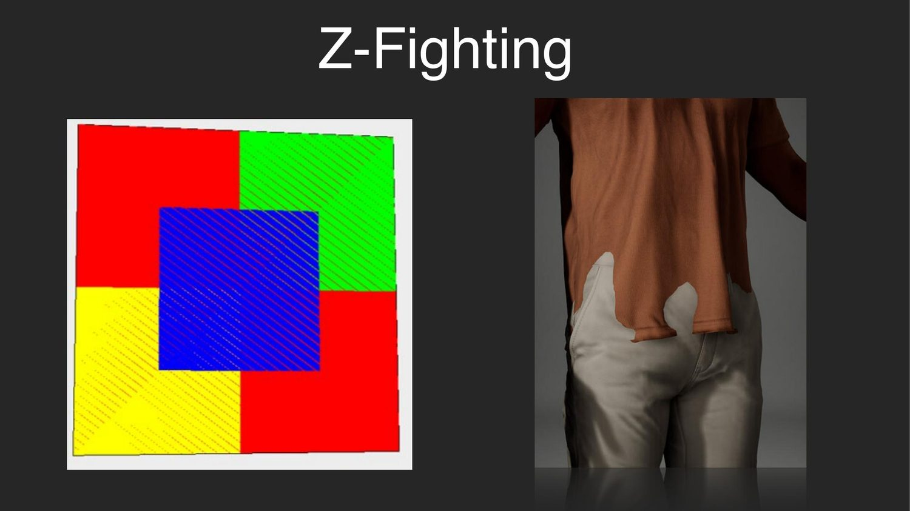
If the fragment shader lowers the front triangle's opacity, we expect to see through it. But blending runs after shading. If we had tested depth before the shader, the Z-buffer would already have culled everything behind the "front" triangle — not knowing it was about to become transparent. We'd see the wrong image.
Default Z-testing happens after the fragment shader, so the depth test can respect what shading/blending decided — even though it costs some wasted work.
When we know we're drawing opaque surfaces, we can do an early-Z test before the shader to skip useless fragments. Modern GPUs have dedicated hardware for it — a depth optimisation we'll reuse later in the unit.
Z-fighting
If two surfaces end up at almost the same depth after projection, floating-point precision can't reliably decide which is in front. Different pixels "win" on different frames → flickering Z-fighting artifacts.
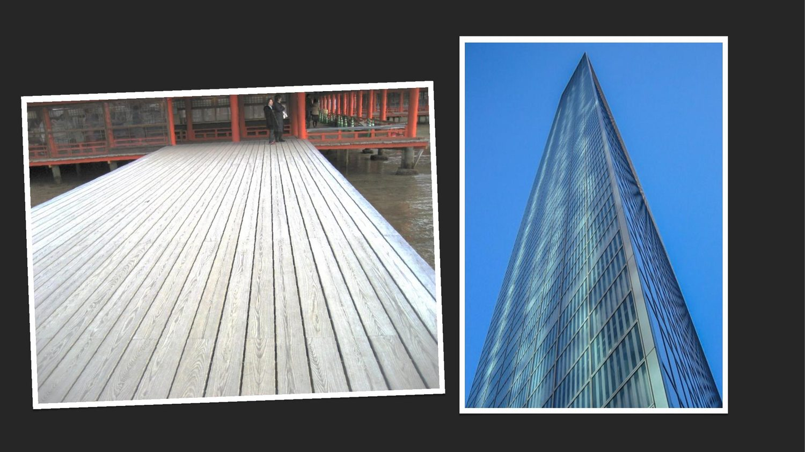
This is especially common for thin surfaces like planes. It's a big reason cloth is hard to render: it's essentially planes with many vertices and complex physics, so depth-testing the fragments is both error-prone and expensive.
→The root cause: linear Z
If near = 1 and far = 100 are mapped to the canonical volume linearly, then a step in depth far from the camera spans the same Z-range as a step right in front of you. But we mostly care about precision near the camera. Linear distribution wastes precision exactly where we don't need it.
Perspective projection (next) maps Z non-linearly — packing precision near the camera. That single change is also our best defence against Z-fighting.
We need perspective
Render the scene now and something is off — it looks flat, lines stay parallel, distant objects don't shrink. It resembles an old isometric strategy game.
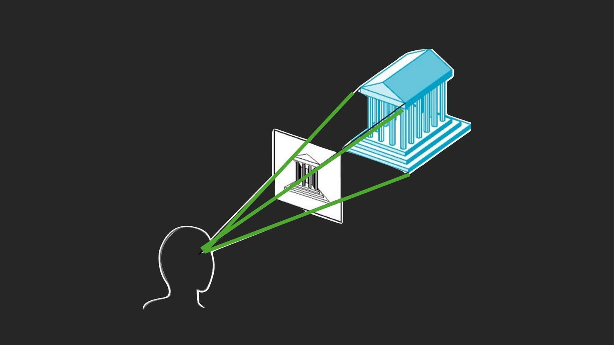
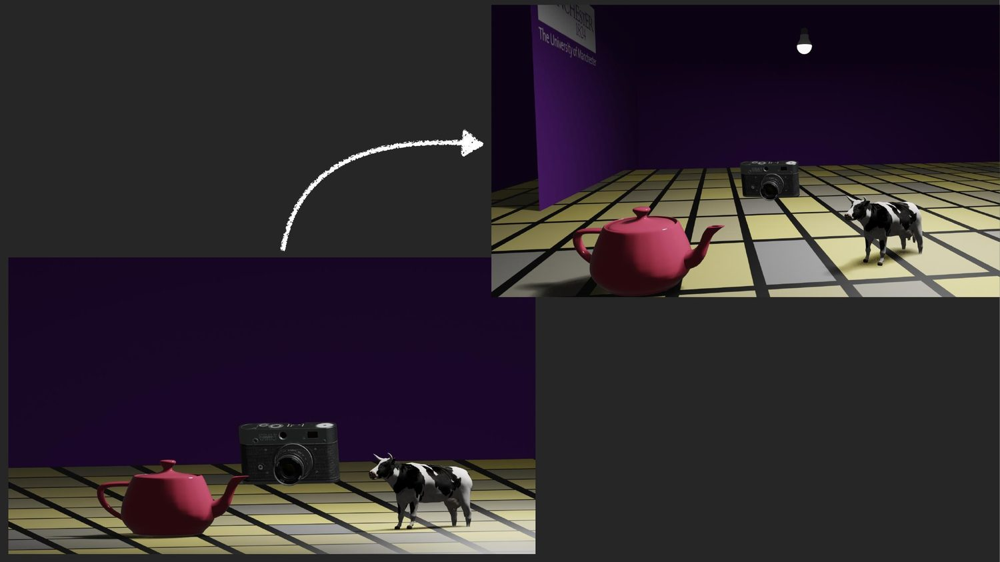
Often a deliberate style, but historically it was a necessity: orthographic projection made texture mapping easy before GPUs could do per-pixel perspective. What we actually want is convergence in the distance.
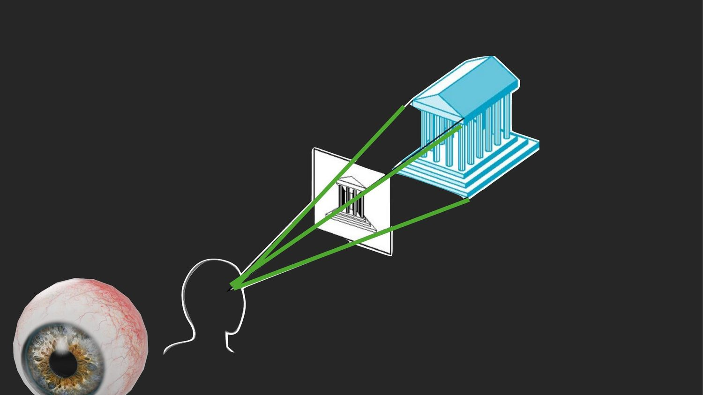
→How artists & eyes solved it
Perspective was a long struggle in art too — early cave paintings and many Asian scrolls keep things orthographic, while the Renaissance discovered converging lines.
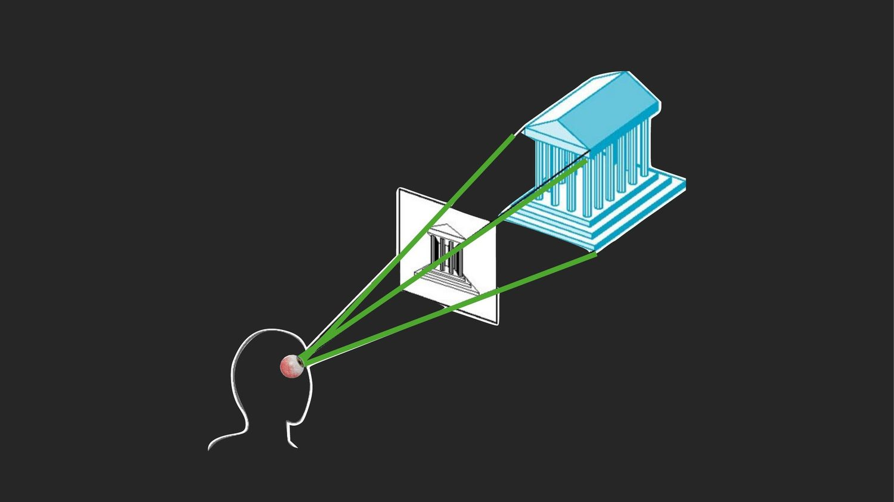
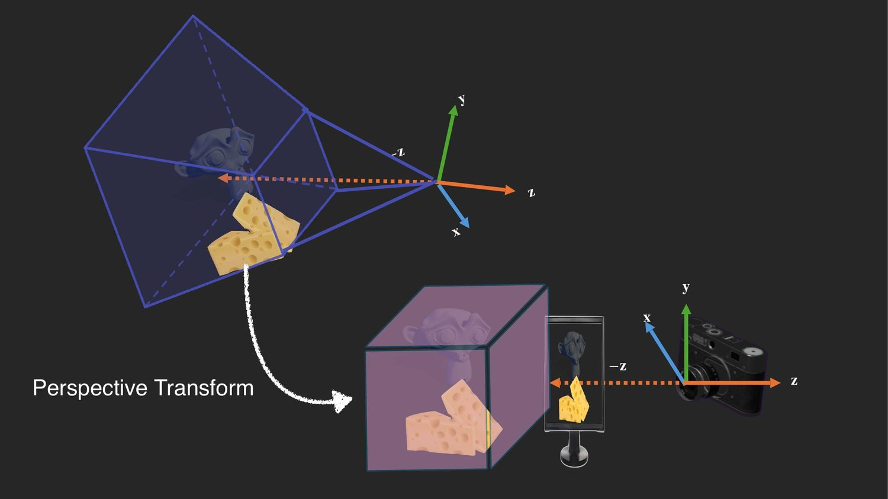
Our eyes don't see a flat parallel world either — light converges through a small pupil onto the retina in a cone of vision, and the brain reads depth cues (size, colour, haze).
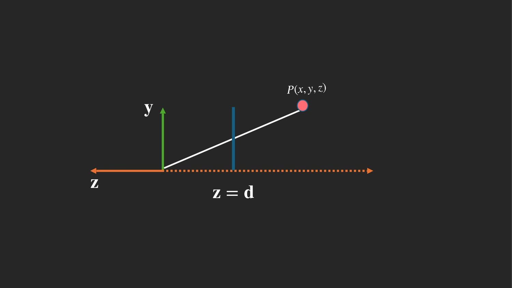
Perspective projection
Screens aren't circular, so instead of a cone we use a truncated pyramid — the viewing frustum. We then map that frustum into the canonical cube; if we scale things correctly before the final orthographic step, we get perspective.
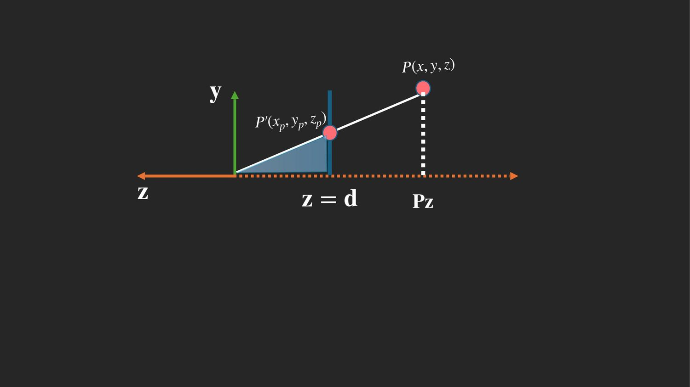
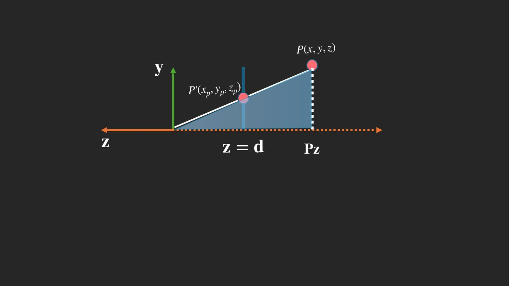
→Similar triangles
Take a point B and draw a ray to the camera. A plane at distance d cuts that ray at P′ — the projected point. The two triangles formed are similar, so the ratios of their sides are equal:
The same holds for x. So a distant point (large z) gets divided by a larger number → it shrinks. That is perspective.
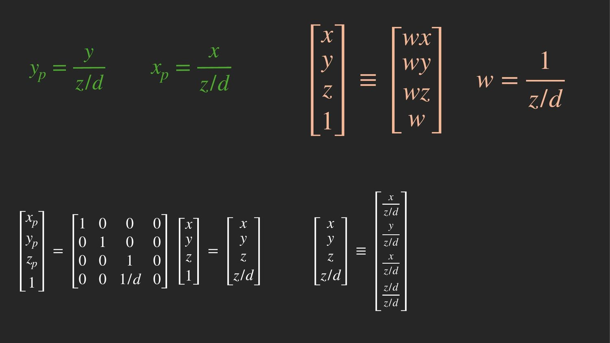
→But matrices can't divide…
We need to divide by a coordinate (z), and matrices only add and multiply. The trick is homogeneous coordinates. Put 1/d in the bottom row and the value we need appears in the 4th coordinate w. A homogeneous vector equals the same vector scaled by any factor, so choosing w = z/d lets the hardware perform the division for us — perspective division.
One scare: in deriving this the Z axis vanished again. The fix is that the "d" we used is really the near plane n, and we also have a far plane f. Redo the algebra and we get:
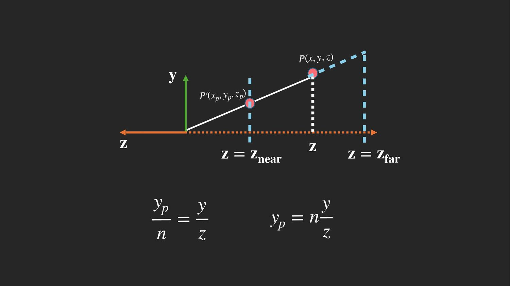
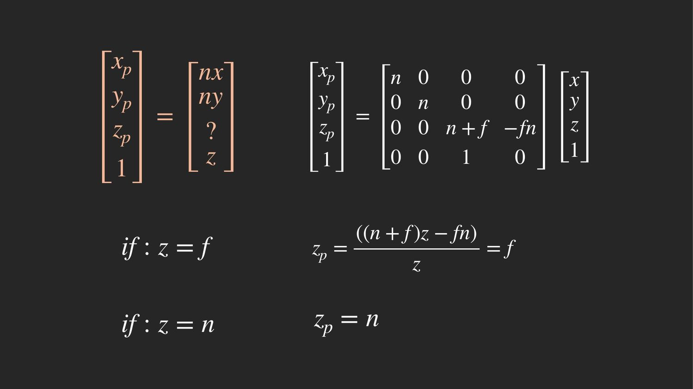
→What happens to Z?
We can't keep true Z through a perspective divide, but we can encode how Z varies between near and far. We scale x and y by n, set the matrix so Z survives in the right slot, and clamp Z using the terms (n + f) and −n·f. After the perspective divide, when z = f the result lands at the far bound; when z = n it lands at the near bound.
This clamped Z is non-linear — precision is concentrated near the camera, exactly what we wanted to prevent Z-fighting. The same trick that gives perspective also fixes our depth-precision problem.
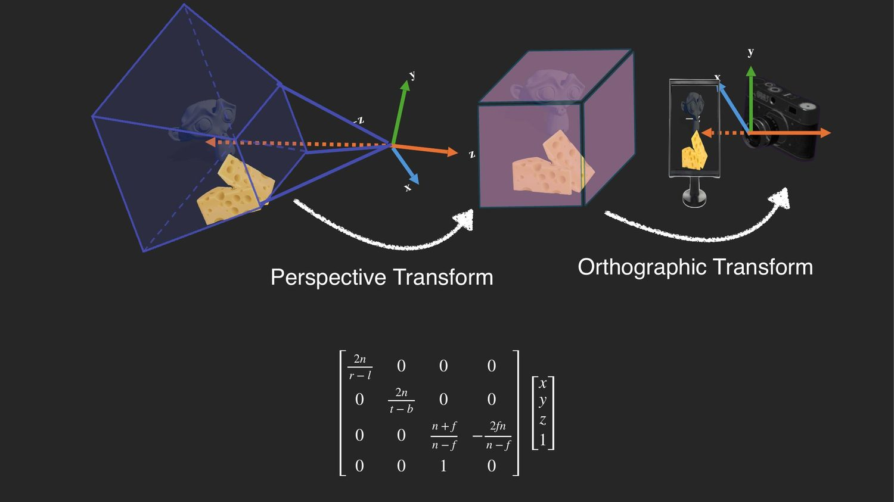
The full transform
Apply the perspective transform first, then the canonical (orthographic) transform — remember we read matrices right-to-left. Multiply them out and you get the single matrix you'll see in textbooks and tutorials. Don't panic when it looks scary.
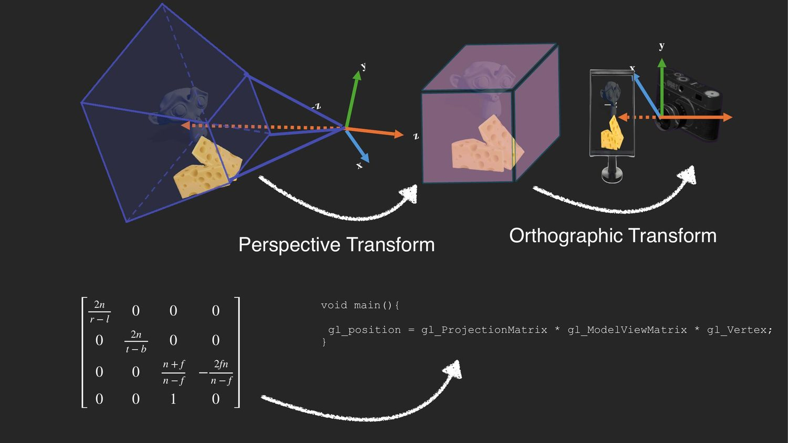
Bound the volume (incl. near + far) → normalise to the canonical cube with an invertible, Z-preserving matrix → resolve hidden surfaces with the Z-buffer (after the fragment shader, so blending works) → swap to a frustum + perspective division for realism and a non-linear Z that also tames Z-fighting.
Next up: with depth solved and the projection correct, we can finally make things look pretty — shading, textures and other rendering methods.
Quiz
Pulled from the unit's visual quizzes — the questions that touch this chapter. Tap an answer for instant feedback.
Exam practice
Real COMP27112 past-paper questions that map onto this chapter, paraphrased into study prompts. Click to reveal a model answer outline. (Z-buffer alone has been worth up to 9 marks.)
2023 & 2025 · 9 marks Describe the Z-buffer algorithm in detail. ▶›
Purpose: solves the hidden-surface problem in display space — nearer surfaces hide farther ones, per pixel.
Setup: allocate a depth buffer the size of the framebuffer; initialise every entry to maximum depth and the framebuffer to the background colour.
Per fragment (after rasterisation, after the fragment shader): for fragment at (x,y) with depth z, compare z with z_buffer[x,y]. If z is nearer, write the new depth and colour; otherwise discard the fragment.
Why after the shader: so opacity/blending decisions are respected; an early-Z test is an opaque-only optimisation.
Limitations: finite floating-point precision causes Z-fighting for coincident/thin surfaces; mitigated by a non-linear (perspective) Z distribution and a sensible near/far ratio.
2018 · 3 marks Describe a hidden-surface-removal technique that operates in display space. ▶›
Name the Z-buffer (depth buffer) — it works in display/screen space, per pixel. Describe init-to-max-depth, the per-fragment depth comparison, keep-if-nearer/else-discard, and that it runs in hardware in the render output stage. Contrast briefly with object-space methods (e.g. depth-sorting / painter's algorithm) which sort whole polygons rather than testing per pixel.
2017 · 3 marks Two triangles (grey ABC scan-converted first, red DEF second & nearer). For pixels P and Q, explain how scan conversion shows them correctly. ▶›
The Z-buffer decides per pixel. When DEF is scan-converted, each fragment's depth is compared with the stored value from ABC. Where DEF is nearer (it is), its depth is smaller, so its colour overwrites ABC at those pixels. At a pixel covered only by ABC, ABC stays. So the ordering of drawing doesn't matter — the depth comparison guarantees the nearer surface wins at P and Q.
2017 · 2 marks What is projection normalisation and why is it used? ▶›
Mapping the arbitrary view volume (any frustum/box defined by left/right/top/bottom/near/far) into a standardised canonical view volume (the −1…1 cube). Used so clipping and rasterisation hardware can assume one fixed volume regardless of display resolution or field of view — no per-display parameters, and the result is ready for projection.
2017 · 1 mark In perspective projection, what does this matrix represent? [1 0 0 0; 0 1 0 0; 0 0 1 0; 0 0 1/d 1] ▶›
It performs the perspective transform via homogeneous coordinates: the 1/d in the bottom row places a depth term (z/d) into the w coordinate. The subsequent perspective division (dividing x,y,z by w) then scales distant points down — producing the foreshortening that makes parallel lines converge.
2025 · short What is the effect of using a perspective matrix to transform points? ▶›
It loads depth into w so that, after perspective division, x and y are divided by (a function of) z. Objects farther from the camera are scaled down and parallel lines converge to a vanishing point; depth is re-encoded non-linearly between the near and far planes, giving more precision close to the camera.
2018 · 1 mark Give an application of similar triangles in computer graphics. ▶›
Perspective projection. The ray from a world point to the eye and the projection plane form similar triangles, giving yp = n·y/z (and xp = n·x/z) — the core relationship behind perspective foreshortening.
2017 · 1 mark Why is a double buffer necessary in a rendering system? ▶›
So the image is composed in a back buffer while the front buffer is displayed, then swapped. This prevents the viewer seeing a partially-drawn frame — eliminating flicker and tearing. (Related to, but distinct from, the depth buffer.)